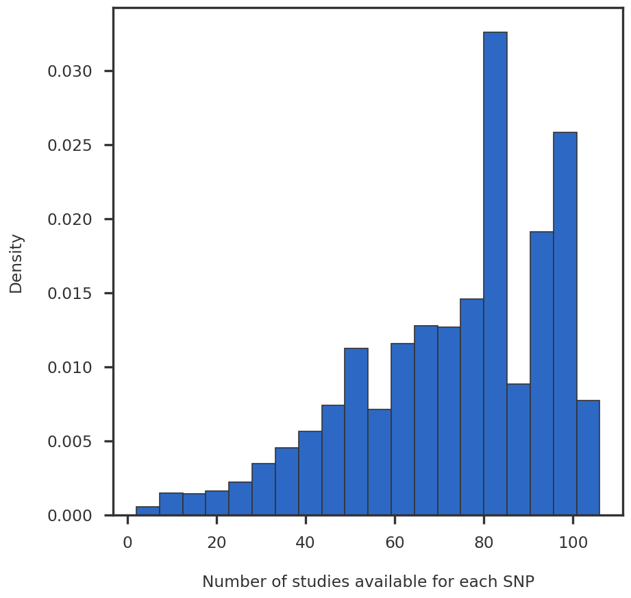
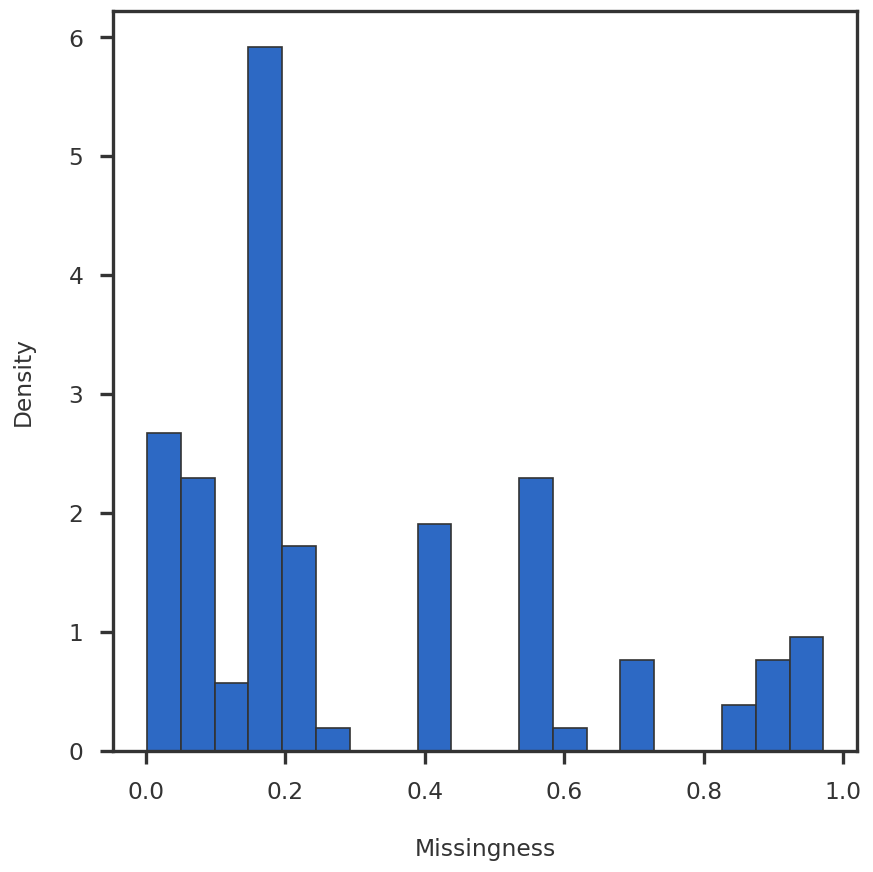

Code
import numpy as np
import pandas as pd
import matplotlib.pyplot as plt
from pymir import mpl_stylesheet
from pymir import mpl_utils
mpl_stylesheet.banskt_presentation(splinecolor = 'black', dpi = 120)Saikat Banerjee
May 12, 2023
Summary statistics for association of selected SNPs with multiple diseases. SNPs which had significant association with at least one phenotype were selected in a previous preprocessing step, details in this repository. Next, the summary statistics of those SNPs for all available phenotypes were included from the respective GWAS.
assoc = {}
req_cols = {
'SNP' : 'string',
'CHR' : 'string',
'BP' : 'Int64', # use Pandas Int64 to handle NA values
'A1' : 'string',
'A2' : 'string',
'Z' : np.float64,
'P' : np.float64,
'BETA': np.float64,
'SE' : np.float64,
'ID' : 'string',
'TRAIT': 'string'
}
for s in studies:
print (f"Read summary statistics for {s}")
header = pd.read_csv(assoc_file[s], nrows=0, sep='\t')
use_cols = [x for x in req_cols.keys() if x in header.columns]
use_dtypes = {k:v for k, v in req_cols.items() if k in use_cols}
assoc[s] = pd.read_csv(assoc_file[s], sep = '\t',
usecols = use_cols,
dtype = use_dtypes
)Read summary statistics for gtex
Read summary statistics for pgc
Read summary statistics for ieuDataFrame.<class 'pandas.core.frame.DataFrame'>
Index: 629656 entries, 0 to 315716
Data columns (total 11 columns):
# Column Non-Null Count Dtype
--- ------ -------------- -----
0 SNP 629656 non-null string
1 CHR 616119 non-null string
2 BP 616119 non-null Int64
3 A2 629656 non-null string
4 A1 629656 non-null string
5 Z 176235 non-null float64
6 P 629656 non-null float64
7 BETA 629656 non-null float64
8 SE 629641 non-null float64
9 ID 629656 non-null string
10 TRAIT 629656 non-null string
dtypes: Int64(1), float64(4), string(6)
memory usage: 58.2 MB| SNP | CHR | BP | A2 | A1 | Z | P | BETA | SE | ID | TRAIT | |
|---|---|---|---|---|---|---|---|---|---|---|---|
| 0 | rs2977608 | chr1 | 832873 | C | A | 0.205174 | 0.837436 | 0.000454 | 0.002213 | UKB_1160_Sleep_duration | UKB_1160_Sleep_duration |
| 1 | rs9442391 | chr1 | 1048922 | C | T | 1.415529 | 0.156913 | 0.002705 | 0.001911 | UKB_1160_Sleep_duration | UKB_1160_Sleep_duration |
| 2 | rs6685064 | chr1 | 1275912 | T | C | -1.869576 | 0.061543 | -0.007038 | 0.003764 | UKB_1160_Sleep_duration | UKB_1160_Sleep_duration |
| 3 | rs4751 | chr1 | 1754601 | T | G | -0.225564 | 0.821541 | -0.000428 | 0.001898 | UKB_1160_Sleep_duration | UKB_1160_Sleep_duration |
| 4 | rs2748987 | chr1 | 1915143 | G | A | -1.141403 | 0.253702 | -0.002823 | 0.002473 | UKB_1160_Sleep_duration | UKB_1160_Sleep_duration |
| ... | ... | ... | ... | ... | ... | ... | ... | ... | ... | ... | ... |
| 315712 | rs17823065 | 2 | 46988073 | C | T | NaN | 0.830000 | 0.000519 | 0.002482 | ieu-b-13 | childhood absence epilepsy |
| 315713 | rs7599488 | 2 | 60718347 | T | C | NaN | 0.730000 | 0.000530 | 0.001563 | ieu-b-13 | childhood absence epilepsy |
| 315714 | rs75010292 | 2 | 55172536 | G | A | NaN | 0.091000 | -0.004222 | 0.002496 | ieu-b-13 | childhood absence epilepsy |
| 315715 | rs10168513 | 2 | 55452375 | A | G | NaN | 0.860000 | -0.000413 | 0.002291 | ieu-b-13 | childhood absence epilepsy |
| 315716 | rs615449 | 2 | 40469480 | A | C | NaN | 0.420000 | -0.002027 | 0.002493 | ieu-b-13 | childhood absence epilepsy |
629656 rows × 11 columns
assoc_df_fa: fa or ‘filter_alleles’ removes alleles which consists of more than two nucleotides.
def count_nucleotides(row, df):
'''
df must have 3 columns: SNP, A1, A2
'''
snp = row['SNP']
snp_dict = df[df['SNP'] == snp][['A1', 'A2']].to_dict('records')
return len(set([v for x in snp_dict for k, v in x.items()]))
'''
Whether to count the alleles.
If a SNP appears twice, most likely it is biallelic with (A1, A2) and (A2, A1) in the two rows.
However, if the second row has (A2, A3), then it is not biallelic.
Therefore, we count the unique nucleotides for each SNP.
!!! This is slow. I have checked there are no (A2, A3) for the current data. Hence, avoid.
'''
do_count_nucleotides = False
alleles = assoc_df[['SNP', 'A1', 'A2']].drop_duplicates()
count_colname = 'count'
alleles_count = alleles['SNP'].value_counts().reset_index(name=count_colname)
if do_count_nucleotides:
count_colname = 'nucleotide_count'
alleles_count[count_colname] = alleles_count.apply(count_nucleotides, axis = 1, args = (alleles,))
biallelic = alleles_count[alleles_count[count_colname] <= 2].merge(alleles, on='SNP', how='inner')
# Arbitrary choice of alleles
one_arrange = biallelic.drop_duplicates('SNP', keep='first').filter(regex = '^(?!.*count)', axis = 1)assoc_df_allele1 = one_arrange.merge(assoc_df, on=['SNP', 'A1', 'A2'], how='inner')
assoc_df_allele2 = one_arrange.merge(assoc_df,
left_on=['SNP', 'A1', 'A2'],
right_on=['SNP', 'A2', 'A1'],
suffixes=('', '_DROP')).filter(regex='^(?!.*_DROP)')
assoc_df_allele2['BETA'] = assoc_df_allele2['BETA'] * -1
assoc_df_allele2['Z'] = assoc_df_allele2['Z'] * -1
assoc_df_fa = pd.concat([assoc_df_allele1, assoc_df_allele2]) # fa: fixed alleles<class 'pandas.core.frame.DataFrame'>
Index: 627286 entries, 0 to 109878
Data columns (total 11 columns):
# Column Non-Null Count Dtype
--- ------ -------------- -----
0 SNP 627286 non-null string
1 A1 627286 non-null string
2 A2 627286 non-null string
3 CHR 613791 non-null string
4 BP 613791 non-null Int64
5 Z 175595 non-null float64
6 P 627286 non-null float64
7 BETA 627286 non-null float64
8 SE 627271 non-null float64
9 ID 627286 non-null string
10 TRAIT 627286 non-null string
dtypes: Int64(1), float64(4), string(6)
memory usage: 58.0 MBSNPs which are available in only a few studies are less powerful ‘features’. For a distribution of SNPs, see Figure 1.

<class 'pandas.core.frame.DataFrame'>
RangeIndex: 625305 entries, 0 to 625304
Data columns (total 11 columns):
# Column Non-Null Count Dtype
--- ------ -------------- -----
0 SNP 625305 non-null string
1 A1 625305 non-null string
2 A2 625305 non-null string
3 CHR 611812 non-null string
4 BP 611812 non-null Int64
5 Z 175388 non-null float64
6 P 625305 non-null float64
7 BETA 625305 non-null float64
8 SE 625290 non-null float64
9 ID 625305 non-null string
10 TRAIT 625305 non-null string
dtypes: Int64(1), float64(4), string(6)
memory usage: 53.1 MB<class 'pandas.core.frame.DataFrame'>
Index: 625283 entries, 0 to 625304
Data columns (total 11 columns):
# Column Non-Null Count Dtype
--- ------ -------------- -----
0 SNP 625283 non-null string
1 A1 625283 non-null string
2 A2 625283 non-null string
3 CHR 611790 non-null string
4 BP 611790 non-null Int64
5 Z 175388 non-null float64
6 P 625283 non-null float64
7 BETA 625283 non-null float64
8 SE 625268 non-null float64
9 ID 625283 non-null string
10 TRAIT 625283 non-null string
dtypes: Int64(1), float64(4), string(6)
memory usage: 57.8 MB| SNP | A1 | A2 | CHR | BP | Z | P | BETA | SE | ID | TRAIT | |
|---|---|---|---|---|---|---|---|---|---|---|---|
| 0 | rs9360322 | A | G | chr6 | 68220736 | 2.121940 | 0.033843 | 0.004764 | 0.002245 | UKB_1160_Sleep_duration | UKB_1160_Sleep_duration |
| 1 | rs9360322 | A | G | chr6 | 68220736 | 0.247038 | 0.804878 | 0.000706 | 0.002858 | UKB_1180_Morning_or_evening_person_chronotype | UKB_1180_Morning_or_evening_person_chronotype |
| 2 | rs9360322 | A | G | chr6 | 68220736 | 0.451971 | 0.651290 | 0.000942 | 0.002084 | UKB_1200_Sleeplessness_or_insomnia | UKB_1200_Sleeplessness_or_insomnia |
| 3 | rs9360322 | A | G | chr6 | 68220736 | -0.556452 | 0.577902 | -0.000050 | 0.000090 | UKB_20002_1243_self_reported_psychological_or_... | UKB_20002_1243_self_reported_psychological_or_... |
| 4 | rs9360322 | A | G | chr6 | 68220736 | -0.682461 | 0.494947 | -0.000084 | 0.000123 | UKB_20002_1262_self_reported_parkinsons_disease | UKB_20002_1262_self_reported_parkinsons_disease |
| ... | ... | ... | ... | ... | ... | ... | ... | ... | ... | ... | ... |
| 625300 | rs144129573 | C | T | 12 | 114922944 | NaN | 0.145900 | 0.060305 | 0.041500 | ieu-b-41 | bipolar disorder |
| 625301 | rs144129573 | C | T | 12 | 114922944 | NaN | 0.886100 | -0.012002 | 0.084000 | ieu-a-806 | Autism |
| 625302 | rs144129573 | C | T | 12 | 114922944 | NaN | 0.545700 | -0.050200 | 0.083000 | ieu-b-7 | Parkinson's disease |
| 625303 | rs144129573 | C | T | 12 | 114922944 | NaN | 0.145900 | -0.060305 | 0.041500 | daner_PGC_BIP32b_mds7a_0416a.txt.gz | daner_PGC_BIP32b_mds7a_0416a.txt.gz |
| 625304 | rs144129573 | C | T | 12 | 114922944 | NaN | 0.044330 | -0.122297 | 0.060800 | pts_all_freeze2_overall.txt.gz | pts_all_freeze2_overall.txt.gz |
625283 rows × 11 columns
beta_df = assoc_df_fa_nsnp_nodup[['SNP', 'ID', 'BETA']].pivot(index = 'SNP', columns = 'ID', values = 'BETA').fillna(0).rename_axis(None, axis = 0).rename_axis(None, axis = 1)
se_df = assoc_df_fa_nsnp_nodup[['SNP', 'ID', 'SE']].pivot(index = 'SNP', columns = 'ID', values = 'SE').rename_axis(None, axis = 0).rename_axis(None, axis = 1)
prec_df = se_df.apply(lambda x: 1 / x / x).fillna(0)<class 'pandas.core.frame.DataFrame'>
Index: 8403 entries, rs1000031 to rs999494
Columns: 108 entries, AD_sumstats_Jansenetal_2019sept.txt.gz to pts_all_freeze2_overall.txt.gz
dtypes: float64(108)
memory usage: 7.0 MBStudies with high missingness are not good samples, hence they are removed. See histogram of missingness in Figure 2

Keeping 80 phenotypes with low missingness<class 'pandas.core.frame.DataFrame'>
Index: 8403 entries, rs1000031 to rs999494
Data columns (total 80 columns):
# Column Non-Null Count Dtype
--- ------ -------------- -----
0 AD_sumstats_Jansenetal_2019sept.txt.gz 8403 non-null float64
1 CNCR_Insomnia_all 8403 non-null float64
2 ENIGMA_Intracraneal_Volume 8403 non-null float64
3 IGAP_Alzheimer 8403 non-null float64
4 Jones_et_al_2016_Chronotype 8403 non-null float64
5 Jones_et_al_2016_SleepDuration 8403 non-null float64
6 MDD_MHQ_BIP_METACARPA_INFO6_A5_NTOT_no23andMe_noUKBB.txt.gz 8403 non-null float64
7 MDD_MHQ_METACARPA_INFO6_A5_NTOT_no23andMe_noUKBB.txt.gz 8403 non-null float64
8 MHQ_Depression_WG_MAF1_INFO4_HRC_Only_Filtered_Dups_FOR_METACARPA_INFO6_A5_NTOT.txt.gz 8403 non-null float64
9 MHQ_Recurrent_Depression_WG_MAF1_INFO4_HRC_Only_Filtered_Dups_FOR_METACARPA_INFO6_A5_NTOT.txt.gz 8403 non-null float64
10 MHQ_Single_Depression_WG_MAF1_INFO4_HRC_Only_Filtered_Dups_FOR_METACARPA_INFO6_A5_NTOT.txt.gz 8403 non-null float64
11 MHQ_Subthreshold_WG_MAF1_INFO4_HRC_Only_Filtered_Dups_FOR_METACARPA_INFO6_A5_NTOT.txt.gz 8403 non-null float64
12 PGC3_SCZ_wave3_public.v2.txt.gz 8403 non-null float64
13 PGC_ADHD_EUR_2017 8403 non-null float64
14 PGC_ASD_2017_CEU 8403 non-null float64
15 SSGAC_Depressive_Symptoms 8403 non-null float64
16 SSGAC_Education_Years_Pooled 8403 non-null float64
17 UKB_1160_Sleep_duration 8403 non-null float64
18 UKB_1180_Morning_or_evening_person_chronotype 8403 non-null float64
19 UKB_1200_Sleeplessness_or_insomnia 8403 non-null float64
20 UKB_20002_1243_self_reported_psychological_or_psychiatric_problem 8403 non-null float64
21 UKB_20002_1262_self_reported_parkinsons_disease 8403 non-null float64
22 UKB_20002_1265_self_reported_migraine 8403 non-null float64
23 UKB_20002_1289_self_reported_schizophrenia 8403 non-null float64
24 UKB_20002_1616_self_reported_insomnia 8403 non-null float64
25 UKB_20016_Fluid_intelligence_score 8403 non-null float64
26 UKB_20127_Neuroticism_score 8403 non-null float64
27 UKB_G40_Diagnoses_main_ICD10_G40_Epilepsy 8403 non-null float64
28 UKB_G43_Diagnoses_main_ICD10_G43_Migraine 8403 non-null float64
29 anxiety.meta.full.cc.txt.gz 8403 non-null float64
30 anxiety.meta.full.fs.txt.gz 8403 non-null float64
31 daner_PGC_BIP32b_mds7a_0416a.txt.gz 8403 non-null float64
32 daner_PGC_BIP32b_mds7a_mds7a_BD1.0416a_INFO6_A5_NTOT.txt.gz 8403 non-null float64
33 daner_PGC_BIP32b_mds7a_mds7a_BD2.0416a_INFO6_A5_NTOT.txt.gz 8403 non-null float64
34 daner_adhd_meta_filtered_NA_iPSYCH23_PGC11_sigPCs_woSEX_2ell6sd_EUR_Neff_70.txt.gz 8403 non-null float64
35 iPSYCH-PGC_ASD_Nov2017.txt.gz 8403 non-null float64
36 ieu-a-1000 8403 non-null float64
37 ieu-a-1041 8403 non-null float64
38 ieu-a-1042 8403 non-null float64
39 ieu-a-1043 8403 non-null float64
40 ieu-a-1044 8403 non-null float64
41 ieu-a-1045 8403 non-null float64
42 ieu-a-1046 8403 non-null float64
43 ieu-a-1047 8403 non-null float64
44 ieu-a-1048 8403 non-null float64
45 ieu-a-1085 8403 non-null float64
46 ieu-a-118 8403 non-null float64
47 ieu-a-1183 8403 non-null float64
48 ieu-a-1184 8403 non-null float64
49 ieu-a-1185 8403 non-null float64
50 ieu-a-1186 8403 non-null float64
51 ieu-a-1188 8403 non-null float64
52 ieu-a-1189 8403 non-null float64
53 ieu-a-22 8403 non-null float64
54 ieu-a-297 8403 non-null float64
55 ieu-a-806 8403 non-null float64
56 ieu-a-990 8403 non-null float64
57 ieu-b-10 8403 non-null float64
58 ieu-b-11 8403 non-null float64
59 ieu-b-12 8403 non-null float64
60 ieu-b-13 8403 non-null float64
61 ieu-b-14 8403 non-null float64
62 ieu-b-15 8403 non-null float64
63 ieu-b-16 8403 non-null float64
64 ieu-b-17 8403 non-null float64
65 ieu-b-18 8403 non-null float64
66 ieu-b-2 8403 non-null float64
67 ieu-b-41 8403 non-null float64
68 ieu-b-42 8403 non-null float64
69 ieu-b-5070 8403 non-null float64
70 ieu-b-7 8403 non-null float64
71 ieu-b-8 8403 non-null float64
72 ieu-b-9 8403 non-null float64
73 ocd_aug2017.txt.gz 8403 non-null float64
74 pgc-bip2021-BDI.vcf.txt.gz 8403 non-null float64
75 pgc-bip2021-BDII.vcf.txt.gz 8403 non-null float64
76 pgc-bip2021-all.vcf.txt.gz 8403 non-null float64
77 pgc.scz2 8403 non-null float64
78 pgcAN2.2019-07.vcf.txt.gz 8403 non-null float64
79 pts_all_freeze2_overall.txt.gz 8403 non-null float64
dtypes: float64(80)
memory usage: 5.2 MB